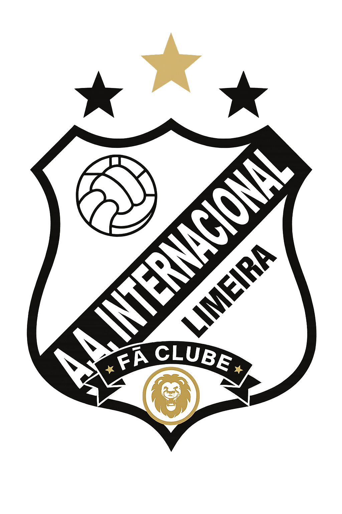
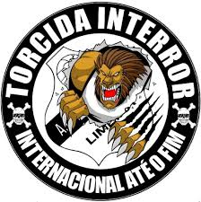
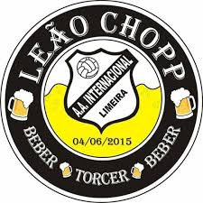

Site Oficial | Menu | Torcidas | Camisas | Cidade
Torcidas organizadas da Inter de Limeira
Principais torcidas
- Interror: Fundada por Edson Romão e torcedores do bairro Boa Vista, comemora mais de 30 anos de tradição.
- Torcida Leão Chopp: Organizada presente nos jogos do Leão da Paulista


Outras torcidas
- Torcida Internação: É uma das agremiações mais tradicionais e ricas em história da Inter de Limeira.
- Urra Leão: É uma das torcidas mais fieis e tradicionais da cidade.
- Fiel da Inter: Uma torcida exclusivamente feminina. O movimento chegou a reunir mais de 50 mulheres para apoiar o Leão da Paulista em caravanas pelas divisões do futebol estadual.